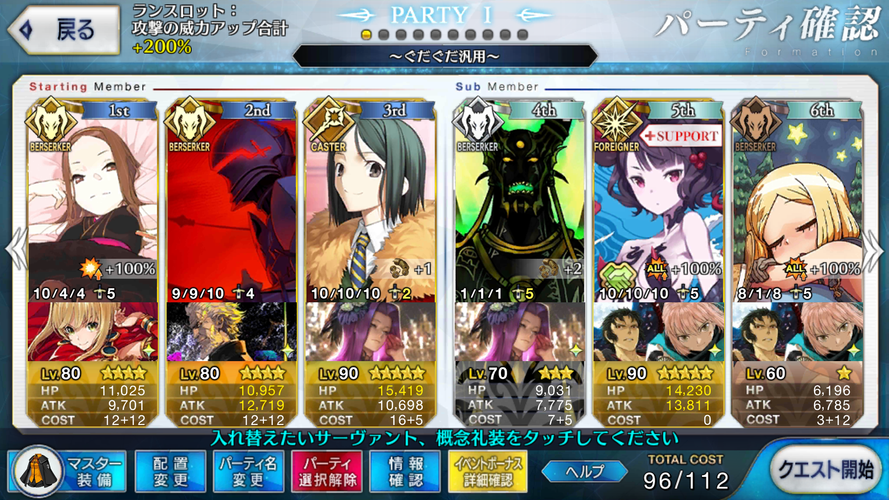

【FGO】復刻：ぐだぐだ明治維新 ライト版 掃討戦 汎用編成
この記事ではFGOイベントの周回を扱います。
編成画像にて最終再臨絵のネタバレがあるのでご注意を
基本方針
- 3T周回する
- 可能な限りドロップ追加礼装を搭載する
対応クエスト
- 旗本級
- 大将級
- 浪士級
- 隊士級
編成例

ランスロットで宝具を2回撃ち、最後に豊臣ポーンズを呼ぶ
リチャージ込みで宝具を2連打できる全体宝具バーサーカーは狂ランスロットのみ
それに加えて、自前でNPを20獲得できる全体宝具バーサーカーでありながらイベント特効持ちの茶々を利用する
開幕ランスロットの宝具でリチャージ30以上であればOK
孔明＋魔術協会礼装でNPを100にして2回目を放てる
茶々は初期NP60礼装＋自前スキル＋軍師の忠言＋軍師の指揮でNP100
大将級、隊士級は最後に追撃が必要になる
狂ランスロットで星を出しているはずなので、狂クリティカルで殴ればだいたいOK